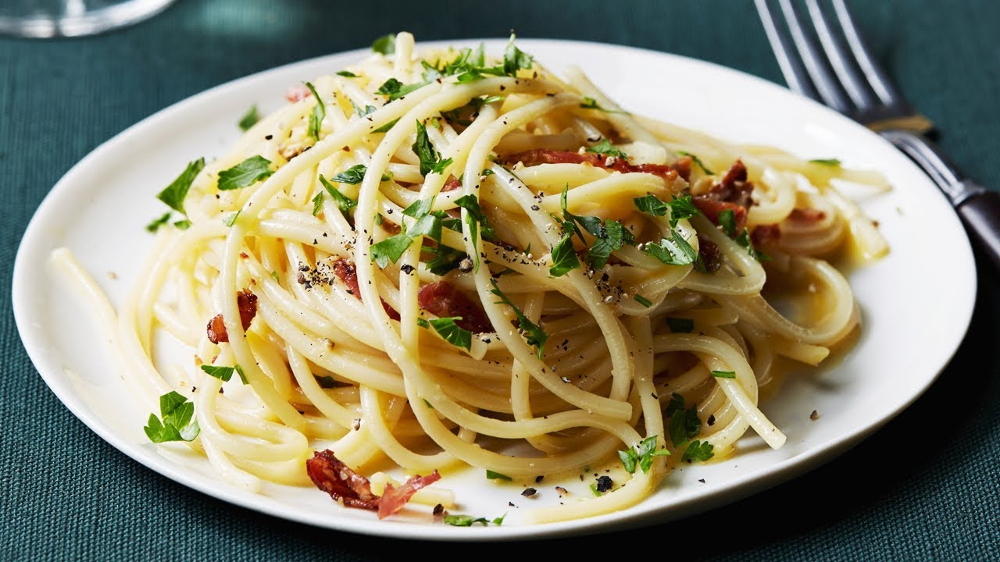

Ingredients
- 1 pound dry spaghetti
- 2 tablespoons extra-virgin olive oil
- 4 ounces pancetta or slab bacon, cubed
- 4 garlic cloves, finely chopped
- 2 large eggs
- 1 cup freshly grated Parmigiano-Reggiano
- Freshly ground black pepper
- 1 handful fresh flat-leaf parsley, chopped
Directions
- 1 Prepare the sauce while the pasta is cooking to ensure that the spaghetti will be hot and ready when the sauce is finished; it is very important that the pasta is hot when adding the egg mixture so that the heat of the pasta cooks the raw eggs in the sauce.
- 2 Bring a large pot of salted water to a boil, add the pasta and cook for 8 to 10 minutes or until tender yet firm (as they say in Italian “al dente.”) Drain the pasta well, reserving 1/2 cup of the starchy cooking water to use in the sauce if you wish.
- 3 Meanwhile, heat the olive oil in a deep skillet over medium flame. Add the pancetta and saute for about 3 minutes, until the bacon is crisp and the fat is rendered. Toss the garlic into the fat and saute for less than 1 minute to soften.
- 4 Add the hot, drained spaghetti to the pan and toss for 2 minutes to coat the strands in the bacon fat. Beat the eggs and Parmesan together in a mixing bowl, stirring well to prevent lumps.
- 5 Remove the pan from the heat and pour the egg/cheese mixture into the pasta, whisking quickly until the eggs thicken, but do not scramble (this is done off the heat to ensure this does not happen.)
- 6 Thin out the sauce with a bit of the reserved pasta water, until it reaches desired consistency. Season the carbonara with several turns of freshly ground black pepper and taste for salt.
- 7 Mound the spaghetti carbonara into warm serving bowls and garnish with chopped parsley. Pass more cheese around the table.
